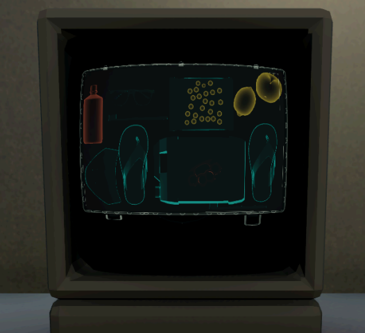

PC · Unity 2022.3 URP · studio team · internship at Rubens Games, July–September 2024
Luggage Please
Systems I built during my internship at Rubens Games: suitcase physics, an X-ray scanner made of URP renderer features, and a contextual interaction wheel.
Luggage Please is a first-person airport security game made by a studio team at Rubens Games, where I was an intern; the art is the studio's.

The X-ray scanner I built, colouring items by material in real time.
At a glance
Team
studio team at Rubens Games (internship); art by the studio's artists
Timeline
Jul – Sep 2024 (internship)
Engine
Unity 2022.3, URP
Platform
PC
Status
internship project (July–September 2024), not released
studio project, not public; all code shown here is my own, written during the internship, and appears with Rubens Games' permission
01
Suitcase physics that runs only during inspection
Problem
A packed suitcase has to act as one solid object when the player carries it, throws it or sends it through the scanner. On the inspection stand, the same case has to open into loose items that the player can pick up, turn over and repack, and the lid must not close through an item left sticking out.
How it works
Items simulate only while the case is open on the inspection stand. When inspection ends, an OverlapBox over the case decides which items are inside; those become kinematic children of the case, so a closed case carries, throws and scans as one body, and anything left outside stays behind. A grabbed item is pushed towards the cursor by forces rather than teleported, so it still shoves its neighbours aside. The lid is animated rather than simulated, so instead of waiting for collision events, an OverlapBox around it runs every frame while the lid is closing and reopens it if an item is in the way.
What it shows
Deciding when not to simulate: physics runs only while items can be touched, with two explicit hand-over points, and physics queries serve as game logic where collision events can't help.
An open case during inspection: every item inside is its own physics object that can be grabbed, turned and repacked.
An X-ray scanner built from layers and URP renderer features
Problem
The scanner shows a live see-through image of the suitcase as it rides through the machine. Items are coloured by material category (metal, organic, other), so the player can spot suspicious contents. The item models come from the studio's artists, and some combine several materials, so the colouring can't rely on code written for each item.
How it works
Colour is assigned per mesh part, not per item: each part of a model sits on one of four X-ray layers, so a model the artists built from several materials simply has its parts on different layers. Each layer has its own URP RenderObjects renderer feature, an extra render pass set up in the renderer asset, which draws that layer's objects with an override material. All four override materials share one fresnel shader that I made in Shader Graph, each with its own colour. Fresnel brightens surfaces that face sideways to the camera, so items read as glowing outlines.
What it shows
Knowing URP's extension points well enough to solve a rendering problem without custom render code, and building it so content scales: the scanner covers 27 item prefabs, and a new item, even one made of several materials, needs only the right layers in its prefab.
Scroll to see the whole diagram →
Five stages from item layers to the scanner's screen; each is configuration, not per-item code.
The scanner's console screen: organic items such as the fruit show in yellow, metal in orange, and everything else, including the case shell, in teal.
An interaction wheel whose options depend on the passenger's checkpoint
Problem
The actions available for a passenger depend on where they are in the airport: what makes sense in the queue is wrong at the metal detector gate. Choosing an action should be quick and shouldn't pull the player out of the game view into a full-screen menu.
How it works
The NPC code builds a list of option IDs from the passenger's current state (which checkpoint they're at, whether their bag is on the scale) and hands it to the wheel. The wheel, in plain uGUI, enables only the pre-built segments on that list and spaces them evenly around the circle for any count. The calling coroutine waits until the player picks an option or closes the wheel, then runs the matching action.
What it shows
A UI component kept separate from game logic: the wheel knows nothing about airport rules, which all stay in the NPC code. It also manages its own input mode in OnEnable/OnDisable: opening it freezes mouse-look and movement and frees the cursor, and closing it restores them, so no caller has to remember to.
Three options, so each takes a third of the circle; hovering an option shows its name in the centre.
All three are built so other people's work can plug in: a new item model appears on the scanner in its category colour once its parts are on the right layers, and the wheel shows whatever option IDs its caller passes in. The trade-off I'd flag: the lid's obstruction check reuses the X-ray item layers as its physics mask, so an item missing its layer would neither show on the scanner nor block the lid.